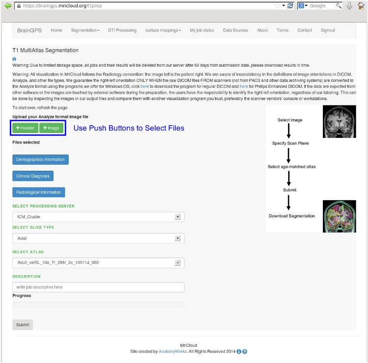
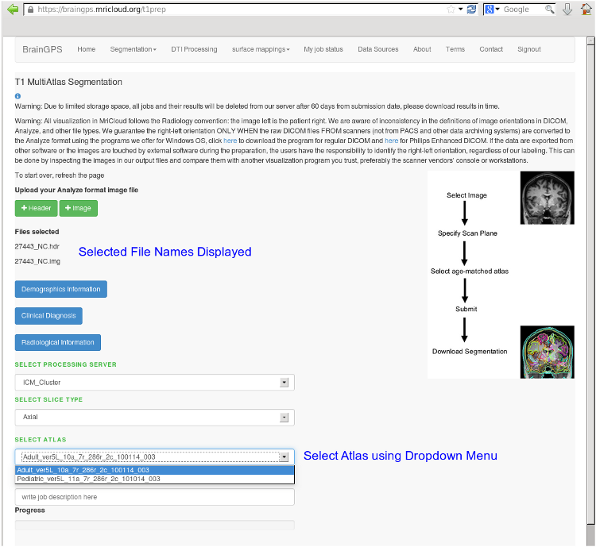
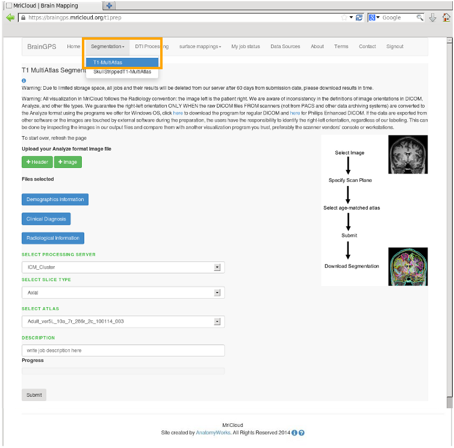
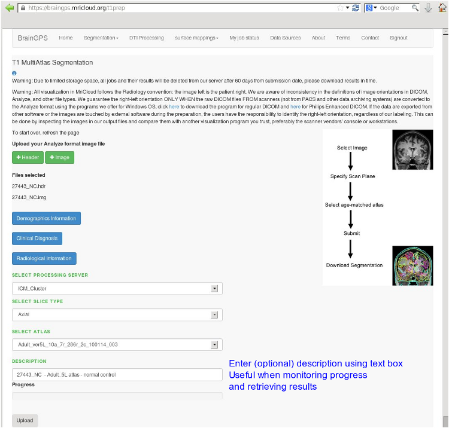

| Step 1 Select the Analyze .img and .hdr files to process. A push button is provided for each file type |
 |
| Step 2 The Select Atlas dropdown menu provides a user the ability to select an appropriate atlas set for the segmentation. |
 |
| Step 3 (optional) To refresh the page (clear any selections) select the Segmentation drop down menu followed by the T1-MultiAtlas menu item. |
 |
| Step 4 Enter description (optional) The description entered by the user will be displayed on Job Status page. This can be of assistance to a user when downloading results. |
 |